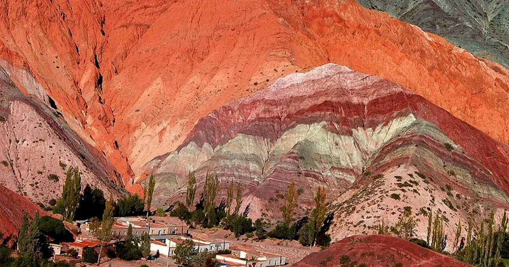
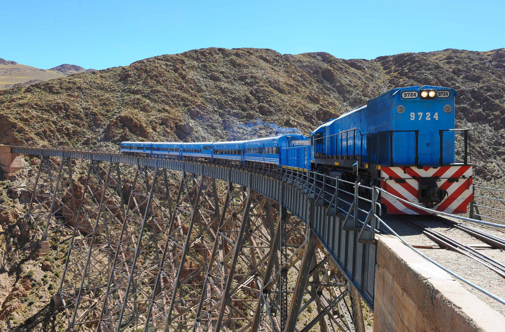
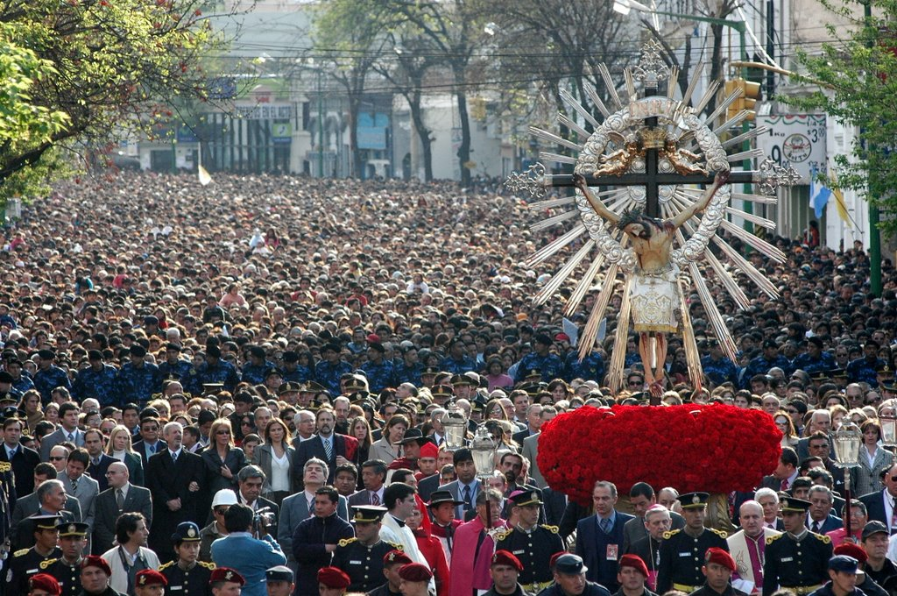

Cerro de los Siete Colores
Ubicado en Purmamarca, este cerro es famoso por sus increíbles vetas de colores formadas por sedimentos de diferentes eras geológicas. Un espectáculo natural único en el mundo.
Descubrí la magia del noroeste argentino con un paquete especial de 7 días y 6 noches.
Desde $800 USD por persona.
¡Reservar ahora!
Ubicado en Purmamarca, este cerro es famoso por sus increíbles vetas de colores formadas por sedimentos de diferentes eras geológicas. Un espectáculo natural único en el mundo.

Una de las obras de ingeniería más impresionantes de Argentina, este tren recorre montañas a más de 4,200 metros de altura, ofreciendo vistas espectaculares de la Puna.
Fundada en 1582 por Hernando de Lerma, Salta fue un importante punto estratégico durante la colonia por su ubicación en el Camino Real al Alto Perú. Conocida como "Salta la Linda", conserva un rico patrimonio cultural que mezcla tradiciones indígenas con influencia española. Fue escenario clave durante las guerras de independencia y conserva importantes testimonios de ese período histórico. Hoy es uno de los destinos turísticos más importantes del norte argentino.

La celebración religiosa más importante del norte argentino conmemora el "Milagro" que salvó a Salta de terremotos en 1692. Durante dos semanas hay procesiones, misas y eventos culturales que atraen a miles de fieles.
Salta tiene un clima variado según la región, desde templado en los valles hasta árido en la Puna.
| Estación | Temperatura promedio | Clima |
|---|---|---|
| Verano | 20-30°C | Cálido y lluvioso (en los valles) |
| Otoño | 15-25°C | Templado y seco |
| Invierno | 5-20°C | Fresco durante el día, frío en la noche |
| Primavera | 18-28°C | Agradable con noches frescas |